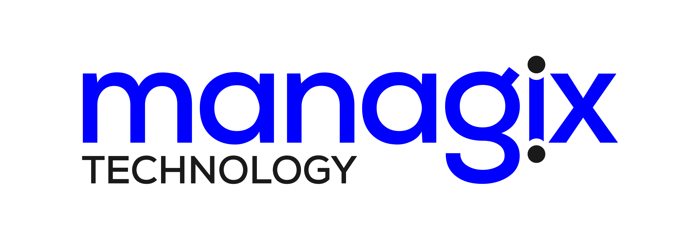

Payroll Management
Payroll calculations, deductions, disbursements, compliance support and reporting automation.

Our services
Managix focuses on application development, collaboration, deployment, management, migration and customization for organizations that need dependable business systems.
Core services
Payroll calculations, deductions, disbursements, compliance support and reporting automation.
Cloud-based web applications, websites, portals and business platforms for online operations.
Applications for e-commerce, business, gaming, health, utilities, social networking and quizzes.
Cloud applications, server maintenance, scalable app development, AWS, Azure and DigitalOcean support.
Role-based dashboards that give clients insight into business performance and operations.
Plans and techniques for attracting, engaging and retaining customers across digital channels.
Search engine visibility support, especially for stronger organic reach on Google.
Validation and release-readiness support when teams need independent product testing capacity.
SAP support, upgrade and implementation; AWS application migration; Microsoft Azure and AX services.
Information portals and business portals that help organizations communicate clearly with customers.
Online stores with payment gateways, user panels, shipping integration and order workflows.
Mobile apps, portals, dashboards, GIS systems, remote alarms, IoT and AI-based tools for risk reduction.
Why choose us
Professionals who have worked across varied domains and understand real delivery challenges.
Technology teams must understand client business models to provide the most effective solution.
Solutions are delivered at competitive rates so technology investment stays sustainable.
Planning, deployment, management, migration, customization and ongoing support sit together.
How we do it
Review the business model and define strategy, goals and practical methods to achieve them.
Create a working revenue model and introduce it across all levels of the business.
Define web marketing and PR strategy while managing the project creation process.
Measure success, report on web business analysis and evaluate market value signals.
Technology stack
Our affiliations